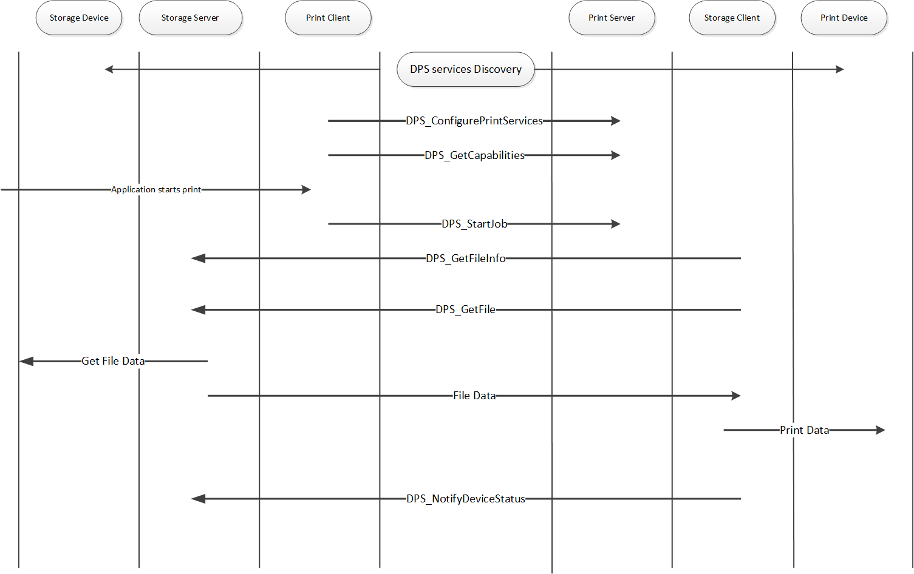

Chapter 4 - USBX Pictbridge implementation
UBSX supports the full Pictbridge implementation both on the host and the device. Pictbridge sits on top of USBX PIMA class on both sides.
The PictBridge standards allows the connection of a digital still camera or a smart phone directly to a printer without a PC, enabling direct printing to certain Pictbridge aware printers.
When a camera or phone is connected to a printer, the printer is the USB host and the camera is the USB device. However, with Pictbridge, the camera will appear as being the host and commands are driven from the camera. The camera is the storage server, the printer the storage client. The camera is the print client and the printer is of course the print server.
Pictbridge uses USB as a transport layer but relies on PTP (Picture Transfer Protocol) for the communication protocol.
The following is a diagram of the commands/responses between the DPS client and the DPS server when a print job occurs:

Pictbridge client implementation
The Pictbridge on the client requires the USBX device stack and the PIMA class to be running first.
A device framework describes the PIMA class in the following way.
UCHAR device_framework_full_speed[] =
{
/* Device descriptor */
0x12, 0x01, 0x10, 0x01, 0x00, 0x00, 0x00, 0x20,
0xA9, 0x04, 0xB6, 0x30, 0x00, 0x00, 0x00, 0x00,
0x00, 0x01,
/* Configuration descriptor */
0x09, 0x02, 0x27, 0x00, 0x01, 0x01, 0x00, 0xc0, 0x32,
/* Interface descriptor */
0x09, 0x04, 0x00, 0x00, 0x03, 0x06, 0x01, 0x01, 0x00,
/* Endpoint descriptor (Bulk Out) */
0x07, 0x05, 0x01, 0x02, 0x40, 0x00, 0x00,
/* Endpoint descriptor (Bulk In) */
0x07, 0x05, 0x82, 0x02, 0x40, 0x00, 0x00,
/* Endpoint descriptor (Interrupt) */
0x07, 0x05, 0x83, 0x03, 0x08, 0x00, 0x60
};The Pima class is using the ID field 0x06 and has its subclass is 0x01 for Still Image and the protocol is 0x01 for PIMA 15740.
Three endpoints are defined in this class; two bulks for sending/receiving data and one interrupt for events.
Unlike other USBX device implementations, the Pictbridge application does not need to define a class itself. Rather it invokes the function ux_pictbridge_dpsclient_start. An example is below.
/* Initialize the Pictbridge string components. */
ux_utility_memory_copy
(pictbridge.ux_pictbridge_dpslocal.ux_pictbridge_devinfo_vendor_name,
"ExpressLogic",13);
ux_utility_memory_copy
(pictbridge.ux_pictbridge_dpslocal.ux_pictbridge_devinfo_product_name,
"EL_Pictbridge_Camera",21);
ux_utility_memory_copy
(pictbridge.ux_pictbridge_dpslocal.ux_pictbridge_devinfo_serial_no, "ABC_123",7);
ux_utility_memory_copy
(pictbridge.ux_pictbridge_dpslocal.ux_pictbridge_devinfo_dpsversions,
"1.0 1.1",7);
pictbridge.ux_pictbridge_dpslocal.ux_pictbridge_devinfo_vendor_specific_version = 0x0100;
/* Start the Pictbridge client. */
status = ux_pictbridge_dpsclient_start(&pictbridge);
if(status != UX_SUCCESS)
return;The parameters passed to the pictbridge client are as follows.
pictbridge.ux_pictbridge_dpslocal.ux_pictbridge_devinfo_vendor_name
: String of Vendor name
pictbridge.ux_pictbridge_dpslocal.ux_pictbridge_devinfo_product_name
: String of product name
pictbridge.ux_pictbridge_dpslocal.ux_pictbridge_devinfo_serial_no
: String of serial number
pictbridge.ux_pictbridge_dpslocal.ux_pictbridge_devinfo_dpsversions
: String of version
pictbridge.ux_pictbridge_dpslocal.ux_pictbridge_devinfo_vendor_specific_version
: Value set to 0x0100;The next step is for the device and the host to synchronize and be ready to exchange information.
This is done by waiting on an event flag as follows.
/* We should wait for the host and the client to discover one another. */
status = ux_utility_event_flags_get(&pictbridge.ux_pictbridge_event_flags_group,
UX_PICTBRIDGE_EVENT_FLAG_DISCOVERY,TX_AND_CLEAR,
&actual_flags, UX_PICTBRIDGE_EVENT_TIMEOUT);If the state machine is in the DISCOVERY_COMPLETE state, the camera side (the DPS client) will gather information regarding the printer and its capabilities.
If the DPS client is ready to accept a print job, its status will be set to UX_PICTBRIDGE_NEW_JOB_TRUE. It can be checked below.
/* Check if the printer is ready for a print job. */
if (pictbridge.ux_pictbridge_dpsclient.ux_pictbridge_devinfo_newjobok ==
UX_PICTBRIDGE_NEW_JOB_TRUE)
/* We can print something … */Next some print joib descriptors need to be filled as follows:
/* We can start a new job. Fill in the JobConfig and PrintInfo structures. */
jobinfo = &pictbridge.ux_pictbridge_jobinfo;
/* Attach a printinfo structure to the job. */
jobinfo -> ux_pictbridge_jobinfo_printinfo_start = &printinfo;
/* Set the default values for print job. */
jobinfo -> ux_pictbridge_jobinfo_quality =
UX_PICTBRIDGE_QUALITIES_DEFAULT;
jobinfo -> ux_pictbridge_jobinfo_papersize =
UX_PICTBRIDGE_PAPER_SIZES_DEFAULT;
jobinfo -> ux_pictbridge_jobinfo_papertype =
UX_PICTBRIDGE_PAPER_TYPES_DEFAULT;
jobinfo -> ux_pictbridge_jobinfo_filetype =
UX_PICTBRIDGE_FILE_TYPES_DEFAULT;
jobinfo -> ux_pictbridge_jobinfo_dateprint =
UX_PICTBRIDGE_DATE_PRINTS_DEFAULT;
jobinfo -> ux_pictbridge_jobinfo_filenameprint =
UX_PICTBRIDGE_FILE_NAME_PRINTS_DEFAULT;
jobinfo -> ux_pictbridge_jobinfo_imageoptimize =
UX_PICTBRIDGE_IMAGE_OPTIMIZES_OFF;
jobinfo -> ux_pictbridge_jobinfo_layout =
UX_PICTBRIDGE_LAYOUTS_DEFAULT;
jobinfo -> ux_pictbridge_jobinfo_fixedsize =
UX_PICTBRIDGE_FIXED_SIZE_DEFAULT;
jobinfo -> ux_pictbridge_jobinfo_cropping =
UX_PICTBRIDGE_CROPPINGS_DEFAULT;
/* Program the callback function for reading the object data. */
jobinfo -> ux_pictbridge_jobinfo_object_data_read =
ux_demo_object_data_copy;
/* This is a demo, the fileID is hardwired (1 and 2 for scripts, 3 for photo to be printed. */
printinfo.ux_pictbridge_printinfo_fileid =
UX_PICTBRIDGE_OBJECT_HANDLE_PRINT;
ux_utility_memory_copy(printinfo.ux_pictbridge_printinfo_filename,
"Pictbridge demo file", 20);
ux_utility_memory_copy(printinfo.ux_pictbridge_printinfo_date, "01/01/2008",
10);
/* Fill in the object info to be printed. First get the pointer to the object container in the job info structure. */
object = (UX_SLAVE_CLASS_PIMA_OBJECT *) jobinfo ->
ux_pictbridge_jobinfo_object;
/* Store the object format: JPEG picture. */
object -> ux_device_class_pima_object_format = UX_DEVICE_CLASS_PIMA_OFC_EXIF_JPEG;
object -> ux_device_class_pima_object_compressed_size = IMAGE_LEN;
object -> ux_device_class_pima_object_offset = 0;
object -> ux_device_class_pima_object_handle_id =
UX_PICTBRIDGE_OBJECT_HANDLE_PRINT;
object -> ux_device_class_pima_object_length = IMAGE_LEN;
/* File name is in Unicode. */
ux_utility_string_to_unicode("JPEG Image", object ->
ux_device_class_pima_object_filename);
/* And start the job. */
status =ux_pictbridge_dpsclient_api_start_job(&pictbridge);The Pictbridge client now has a print job to do and will fetch the image blocks at a time from the application through the callback defined in the field
jobinfo -> ux_pictbridge_jobinfo_object_data_readThe prototype of that function is defined as:
ux_pictbridge_jobinfo_object_data_read
Copying a block of data from user space for printing
Prototype
UINT ux_pictbridge_jobinfo_object_data_read(
UX_PICTBRIDGE *pictbridge,
UCHAR *object_buffer,
ULONG object_offset,
ULONG object_length,
ULONG *actual_length)Description
This function is called when the DPS client needs to retrieve a data block to print to the target Pictbridge printer.
Parameters
-
pictbridge: Pointer to the pictbridge class instance.
-
object_buffer: Pointer to object buffer
-
object_offset: Where we are starting to read the data block
-
object_length: Length to be returned
-
actual_length: Actual length returned
Return Value
-
UX_SUCCESS (0x00) This operation was successful.
-
UX_ERROR (0x01) The application could not retrieve data.
Example
/* Copy the object data. */
UINT ux_demo_object_data_copy(
UX_PICTBRIDGE *pictbridge,
UCHAR *object_buffer,
ULONG object_offset,
ULONG object_length,
ULONG *actual_length)
{
/* Copy the demanded object data portion. */
ux_utility_memory_copy(object_buffer, image + object_offset,
object_length);
/* Update the actual length. */
*actual_length = object_length;
/* We have copied the requested data. Return OK. */
return(UX_SUCCESS);
}Pictbridge host implementation
The host implementation of Pictbridge is different from the client.
The first thing to do in a Pictbridge host environment is to register the Pima class as the example below shows:
status = ux_host_stack_class_register(_ux_system_host_class_pima_name,
ux_host_class_pima_entry);
if(status != UX_SUCCESS)
return;This class is the generic PTP layer sitting between the USB stack and the Pictbridge layer.
The next step is to initialize the Pictbridge default values for print services as follows:
| Pictbridge field | Value |
|---|---|
DpsVersion[0] |
0x00010000 |
DpsVersion[1] |
0x00010001 |
DpsVersion[2] |
0x00000000 |
VendorSpecificVersion |
0x00010000 |
PrintServiceAvailable |
0x30010000 |
Qualities[0] |
UX_PICTBRIDGE_QUALITIES_DEFAULT |
Qualities[1] |
UX_PICTBRIDGE_QUALITIES_NORMAL |
Qualities[2] |
UX_PICTBRIDGE_QUALITIES_DRAFT |
Qualities[3] |
UX_PICTBRIDGE_QUALITIES_FINE |
PaperSizes[0] |
UX_PICTBRIDGE_PAPER_SIZES_DEFAULT |
PaperSizes[1] |
UX_PICTBRIDGE_PAPER_SIZES_4IX6I |
PaperSizes[2] |
UX_PICTBRIDGE_PAPER_SIZES_L |
PaperSizes[3] |
UX_PICTBRIDGE_PAPER_SIZES_2L |
PaperSizes[4] |
UX_PICTBRIDGE_PAPER_SIZES_LETTER |
PaperTypes[0] |
UX_PICTBRIDGE_PAPER_TYPES_DEFAULT |
PaperTypes[1] |
UX_PICTBRIDGE_PAPER_TYPES_PLAIN |
PaperTypes[2 |
UX_PICTBRIDGE_PAPER_TYPES_PHOTO |
FileTypes[0] |
UX_PICTBRIDGE_FILE_TYPES_DEFAULT |
FileTypes[1] |
UX_PICTBRIDGE_FILE_TYPES_EXIF_JPEG |
FileTypes[2] |
UX_PICTBRIDGE_FILE_TYPES_JFIF |
FileTypes[3] |
UX_PICTBRIDGE_FILE_TYPES_DPOF |
DatePrints[0] |
UX_PICTBRIDGE_DATE_PRINTS_DEFAULT |
DatePrints[1] |
UX_PICTBRIDGE_DATE_PRINTS_OFF |
DatePrints[2] |
UX_PICTBRIDGE_DATE_PRINTS_ON |
FileNamePrints[0] |
UX_PICTBRIDGE_FILE_NAME_PRINTS_DEFAULT |
FileNamePrints[1] |
UX_PICTBRIDGE_FILE_NAME_PRINTS_OFF |
FileNamePrints[2] |
UX_PICTBRIDGE_FILE_NAME_PRINTS_ON |
ImageOptimizes[0] |
UX_PICTBRIDGE_IMAGE_OPTIMIZES_DEFAULT |
ImageOptimizes[1] |
UX_PICTBRIDGE_IMAGE_OPTIMIZES_OFF |
ImageOptimizes[2] |
UX_PICTBRIDGE_IMAGE_OPTIMIZES_ON |
Layouts[0] |
UX_PICTBRIDGE_LAYOUTS_DEFAULT |
Layouts[1] |
UX_PICTBRIDGE_LAYOUTS_1_UP_BORDER |
Layouts[2] |
UX_PICTBRIDGE_LAYOUTS_INDEX_PRINT |
Layouts[3] |
UX_PICTBRIDGE_LAYOUTS_1_UP_BORDERLESS |
FixedSizes[0] |
UX_PICTBRIDGE_FIXED_SIZE_DEFAULT |
FixedSizes[1] |
UX_PICTBRIDGE_FIXED_SIZE_35IX5I |
FixedSizes[2] |
UX_PICTBRIDGE_FIXED_SIZE_4IX6I |
FixedSizes[3] |
UX_PICTBRIDGE_FIXED_SIZE_5IX7I |
FixedSizes[4] |
UX_PICTBRIDGE_FIXED_SIZE_7CMX10CM |
FixedSizes[5] |
UX_PICTBRIDGE_FIXED_SIZE_LETTER |
FixedSizes[6] |
UX_PICTBRIDGE_FIXED_SIZE_A4 |
Croppings[0] |
UX_PICTBRIDGE_CROPPINGS_DEFAULT |
Croppings[1] |
UX_PICTBRIDGE_CROPPINGS_OFF |
Croppings[2] |
UX_PICTBRIDGE_CROPPINGS_ON |
The state machine of the DPS host will be set to Idle and ready to accept a new print job.
The host portion of Pictbridge can now be started as the example below shows:
/* Activate the pictbridge dpshost. */
status = ux_pictbridge_dpshost_start(&pictbridge, pima);
if (status != UX_SUCCESS)
return;The Pictbridge host function requires a callback when data is ready to be printed. This is accomplished by passing a function pointer in the pictbridge host structure as follows.
/* Set a callback when an object is being received. */
pictbridge.ux_pictbridge_application_object_data_write =
tx_demo_object_data_write;This function has the following properties.
ux_pictbridge_application_object_data_write
Writing a block of data for printing
Prototype
UINT ux_pictbridge_application_object_data_write(
UX_PICTBRIDGE *pictbridge,
UCHAR *object_buffer,
ULONG offset,
ULONG total_length,
ULONG length);Description
This function is called when the DPS server needs to retrieve a data block from the DPS client to print to the local printer.
Parameters
-
pictbridge: Pointer to the pictbridge class instance.
-
object_buffer: Pointer to object buffer
-
object_offset: Where we are starting to read the data block
-
total_length: Entire length of object
-
length: Length of this buffer
Return Value
-
UX_SUCCESS (0x00) This operation was successful.
-
UX_ERROR (0x01) The application could not print data.
Example
/* Copy the object data. */
UINT tx_demo_object_data_write(UX_PICTBRIDGE *pictbridge,
UCHAR *object_buffer, ULONG offset, ULONG total_length, ULONG length);
{
UINT status;
/* Send the data to the local printer. */
status = local_printer_data_send(object_buffer, length);
/* We have printed the requested data. Return status. */
return(status);
}